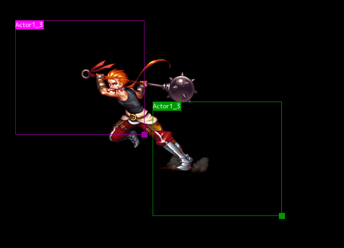

Preview
Previewing shows events on the timeline in real time. Some picture manipulation is also possible.
Picture Manipulation

When a Show Picture Event is selected, frames for the pictures are displayed. Each start point is displayed in purple, and each end point is displayed in green.
Move the picture's position by dragging the name located on the upper left part of the frame. If the Alt key is held while dragging, all frames can be moved.
The size can also be changed by dragging the lower right corner of the frame.